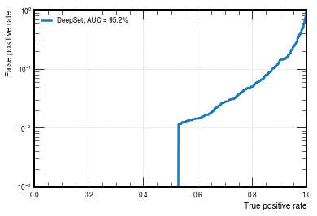

Deep Sets
Contents
Deep Sets#
We will start by looking at Deep Sets networks using PyTorch. The architecture is based on the following paper: DeepSets
import torch
device = torch.device("cuda:0" if torch.cuda.is_available() else "cpu")
from tqdm.notebook import tqdm
import numpy as np
import yaml
with open('definitions.yml') as file:
# The FullLoader parameter handles the conversion from YAML
# scalar values to Python the dictionary format
definitions = yaml.load(file, Loader=yaml.FullLoader)
features = definitions['features']
spectators = definitions['spectators']
labels = definitions['labels']
nfeatures = definitions['nfeatures']
nspectators = definitions['nspectators']
nlabels = definitions['nlabels']
ntracks = definitions['ntracks']
Dataset loader#
Here we have to define the dataset loader.
from DeepSetsDataset import DeepSetsDataset
train_files = ['root://eospublic.cern.ch//eos/opendata/cms/datascience/HiggsToBBNtupleProducerTool/HiggsToBBNTuple_HiggsToBB_QCD_RunII_13TeV_MC/train/ntuple_merged_11.root']
test_files = ['root://eospublic.cern.ch//eos/opendata/cms/datascience/HiggsToBBNtupleProducerTool/HiggsToBBNTuple_HiggsToBB_QCD_RunII_13TeV_MC/test/ntuple_merged_1.root']
train_generator = DeepSetsDataset(features, labels, spectators, n_events=10000, npad = ntracks,
file_names=train_files)
train_generator.process()
test_generator = DeepSetsDataset(features, labels, spectators, n_events=4000, npad = ntracks,
file_names=test_files)
test_generator.process()
---------------------------------------------------------------------------
ModuleNotFoundError Traceback (most recent call last)
/opt/hostedtoolcache/Python/3.7.13/x64/lib/python3.7/site-packages/uproot/extras.py in XRootD_client()
73 try:
---> 74 import XRootD
75 import XRootD.client
ModuleNotFoundError: No module named 'XRootD'
During handling of the above exception, another exception occurred:
ModuleNotFoundError Traceback (most recent call last)
/tmp/ipykernel_2179/3483552077.py in <module>
6 train_generator = DeepSetsDataset(features, labels, spectators, n_events=10000, npad = ntracks,
7 file_names=train_files)
----> 8 train_generator.process()
9
10 test_generator = DeepSetsDataset(features, labels, spectators, n_events=4000, npad = ntracks,
~/work/iaifi-summer-school/iaifi-summer-school/book/DeepSetsDataset.py in process(self)
59 """
60 for raw_path in self.raw_file_names:
---> 61 with uproot.open(raw_path, **get_file_handler(raw_path)) as root_file:
62
63 tree = root_file['deepntuplizer/tree']
/opt/hostedtoolcache/Python/3.7.13/x64/lib/python3.7/site-packages/uproot/reading.py in open(path, object_cache, array_cache, custom_classes, decompression_executor, interpretation_executor, **options)
146 decompression_executor=decompression_executor,
147 interpretation_executor=interpretation_executor,
--> 148 **options, # NOTE: a comma after **options breaks Python 2
149 )
150
/opt/hostedtoolcache/Python/3.7.13/x64/lib/python3.7/site-packages/uproot/reading.py in __init__(self, file_path, object_cache, array_cache, custom_classes, decompression_executor, interpretation_executor, **options)
579 )
580 self._source = Source(
--> 581 file_path, **self._options # NOTE: a comma after **options breaks Python 2
582 )
583
/opt/hostedtoolcache/Python/3.7.13/x64/lib/python3.7/site-packages/uproot/source/xrootd.py in __init__(self, file_path, **options)
451 self._file_path = file_path
452 self._num_bytes = None
--> 453 self._open()
454
455 def _open(self):
/opt/hostedtoolcache/Python/3.7.13/x64/lib/python3.7/site-packages/uproot/source/xrootd.py in _open(self)
457 [
458 XRootDResource(self._file_path, self._timeout)
--> 459 for x in range(self._num_workers)
460 ]
461 )
/opt/hostedtoolcache/Python/3.7.13/x64/lib/python3.7/site-packages/uproot/source/xrootd.py in <listcomp>(.0)
457 [
458 XRootDResource(self._file_path, self._timeout)
--> 459 for x in range(self._num_workers)
460 ]
461 )
/opt/hostedtoolcache/Python/3.7.13/x64/lib/python3.7/site-packages/uproot/source/xrootd.py in __init__(self, file_path, timeout)
81 self._file_path = file_path
82 self._timeout = timeout
---> 83 self._open()
84
85 def _open(self):
/opt/hostedtoolcache/Python/3.7.13/x64/lib/python3.7/site-packages/uproot/source/xrootd.py in _open(self)
84
85 def _open(self):
---> 86 XRootD_client = uproot.extras.XRootD_client()
87
88 self._file = XRootD_client.File()
/opt/hostedtoolcache/Python/3.7.13/x64/lib/python3.7/site-packages/uproot/extras.py in XRootD_client()
81 conda install -c conda-forge xrootd
82
---> 83 (or download from http://xrootd.org/dload.html and manually compile with """
84 """cmake; setting PYTHONPATH and LD_LIBRARY_PATH appropriately)."""
85 )
ModuleNotFoundError: Install XRootD python bindings with:
conda install -c conda-forge xrootd
(or download from http://xrootd.org/dload.html and manually compile with cmake; setting PYTHONPATH and LD_LIBRARY_PATH appropriately).
Deep Sets Network#
Deep Sets models are designed to be explicitly permutation invariant. At their core they are composed of two networks, \(\phi\) and \(\rho\), such that the total network \(f\) is given by
\( \begin{align} f &= \rho\left(\Sigma_{\mathbf{x}_i\in\mathcal{X}}\phi(\mathbf{x}_i)\right) \label{eq:deepsets-functions} \end{align} \)
where \(\mathbf{x}_i\) are the features for the i-th element in the input sequence \(\mathcal{X}\).
We will define a DeepSets model that will take as input up to 60 of the tracks (with 48 features) with zero-padding.
import torch.nn as nn
import torch.nn.functional as F
from torch.nn import Sequential as Seq, Linear as Lin, ReLU, BatchNorm1d, AvgPool1d, Sigmoid, Conv1d
from torch_scatter import scatter_mean
#ntracks = 60
inputs = 48
hidden1 = 64
hidden2 = 32
hidden3 = 16
classify1 = 50
outputs = 2
class DeepSets(torch.nn.Module):
def __init__(self):
super(DeepSets, self).__init__()
self.phi = Seq(Conv1d(inputs, hidden1, 1),
BatchNorm1d(hidden1),
ReLU(),
Conv1d(hidden1, hidden2, 1),
BatchNorm1d(hidden2),
ReLU(),
Conv1d(hidden2, hidden3, 1),
BatchNorm1d(hidden3),
ReLU())
self.rho = Seq(Lin(hidden3,classify1),
BatchNorm1d(classify1),
ReLU(),
Lin(classify1,outputs),
Sigmoid())
def forward(self, x):
out = self.phi(x)
out = scatter_mean(out, torch.LongTensor(np.zeros(ntracks)), dim=-1)
return self.rho(torch.squeeze(out))
model = DeepSets()
print(model)
print('----------')
print({l:model.state_dict()[l].shape for l in model.state_dict()})
model = DeepSets().to(device)
optimizer = torch.optim.Adam(model.parameters(), lr = 1e-2)
DeepSets(
(phi): Sequential(
(0): Conv1d(48, 64, kernel_size=(1,), stride=(1,))
(1): BatchNorm1d(64, eps=1e-05, momentum=0.1, affine=True, track_running_stats=True)
(2): ReLU()
(3): Conv1d(64, 32, kernel_size=(1,), stride=(1,))
(4): BatchNorm1d(32, eps=1e-05, momentum=0.1, affine=True, track_running_stats=True)
(5): ReLU()
(6): Conv1d(32, 16, kernel_size=(1,), stride=(1,))
(7): BatchNorm1d(16, eps=1e-05, momentum=0.1, affine=True, track_running_stats=True)
(8): ReLU()
)
(rho): Sequential(
(0): Linear(in_features=16, out_features=50, bias=True)
(1): BatchNorm1d(50, eps=1e-05, momentum=0.1, affine=True, track_running_stats=True)
(2): ReLU()
(3): Linear(in_features=50, out_features=2, bias=True)
(4): Sigmoid()
)
)
----------
{'phi.0.weight': torch.Size([64, 48, 1]), 'phi.0.bias': torch.Size([64]), 'phi.1.weight': torch.Size([64]), 'phi.1.bias': torch.Size([64]), 'phi.1.running_mean': torch.Size([64]), 'phi.1.running_var': torch.Size([64]), 'phi.1.num_batches_tracked': torch.Size([]), 'phi.3.weight': torch.Size([32, 64, 1]), 'phi.3.bias': torch.Size([32]), 'phi.4.weight': torch.Size([32]), 'phi.4.bias': torch.Size([32]), 'phi.4.running_mean': torch.Size([32]), 'phi.4.running_var': torch.Size([32]), 'phi.4.num_batches_tracked': torch.Size([]), 'phi.6.weight': torch.Size([16, 32, 1]), 'phi.6.bias': torch.Size([16]), 'phi.7.weight': torch.Size([16]), 'phi.7.bias': torch.Size([16]), 'phi.7.running_mean': torch.Size([16]), 'phi.7.running_var': torch.Size([16]), 'phi.7.num_batches_tracked': torch.Size([]), 'rho.0.weight': torch.Size([50, 16]), 'rho.0.bias': torch.Size([50]), 'rho.1.weight': torch.Size([50]), 'rho.1.bias': torch.Size([50]), 'rho.1.running_mean': torch.Size([50]), 'rho.1.running_var': torch.Size([50]), 'rho.1.num_batches_tracked': torch.Size([]), 'rho.3.weight': torch.Size([2, 50]), 'rho.3.bias': torch.Size([2])}
Define training loop#
@torch.no_grad()
def test(model, loader, total, batch_size, leave=False):
model.eval()
xentropy = nn.CrossEntropyLoss(reduction='mean')
sum_loss = 0.
t = tqdm(enumerate(loader), total=total/batch_size, leave=leave)
for i, data in t:
x = data[0].to(device)
y = data[1].to(device)
y = torch.argmax(y, dim=1)
batch_output = model(x)
batch_loss_item = xentropy(batch_output, y).item()
sum_loss += batch_loss_item
t.set_description("loss = %.5f" % (batch_loss_item))
t.refresh() # to show immediately the update
return sum_loss/(i+1)
def train(model, optimizer, loader, total, batch_size, leave=False):
model.train()
xentropy = nn.CrossEntropyLoss(reduction='mean')
sum_loss = 0.
t = tqdm(enumerate(loader), total=total/batch_size, leave=leave)
for i, data in t:
x = data[0].to(device)
y = data[1].to(device)
y = torch.argmax(y, dim=1)
optimizer.zero_grad()
batch_output = model(x)
batch_loss = xentropy(batch_output, y)
batch_loss.backward()
batch_loss_item = batch_loss.item()
t.set_description("loss = %.5f" % batch_loss_item)
t.refresh() # to show immediately the update
sum_loss += batch_loss_item
optimizer.step()
return sum_loss/(i+1)
Define training, validation, testing data generators#
from torch.utils.data import ConcatDataset
train_generator_data = ConcatDataset(train_generator.datas)
test_generator_data = ConcatDataset(test_generator.datas)
from torch.utils.data import random_split, DataLoader
torch.manual_seed(0)
valid_frac = 0.20
train_length = len(train_generator_data)
valid_num = int(valid_frac*train_length)
batch_size = 32
train_dataset, valid_dataset = random_split(train_generator_data, [train_length-valid_num,valid_num])
def collate(items):
l = sum(items, [])
return Batch.from_data_list(l)
train_loader = DataLoader(train_dataset, batch_size=batch_size, shuffle=True)
#train_loader.collate_fn = collate
valid_loader = DataLoader(valid_dataset, batch_size=batch_size, shuffle=False)
#valid_loader.collate_fn = collate
test_loader = DataLoader(test_generator_data, batch_size=batch_size, shuffle=False)
#test_loader.collate_fn = collate
train_samples = len(train_dataset)
valid_samples = len(valid_dataset)
test_samples = len(test_generator_data)
print(train_length)
print(train_samples)
print(valid_samples)
print(test_samples)
9365
7492
1873
3739
Train#
import os.path as osp
n_epochs = 30
stale_epochs = 0
best_valid_loss = 99999
patience = 5
t = tqdm(range(0, n_epochs))
for epoch in t:
loss = train(model, optimizer, train_loader, train_samples, batch_size, leave=bool(epoch==n_epochs-1))
valid_loss = test(model, valid_loader, valid_samples, batch_size, leave=bool(epoch==n_epochs-1))
print('Epoch: {:02d}, Training Loss: {:.4f}'.format(epoch, loss))
print(' Validation Loss: {:.4f}'.format(valid_loss))
if valid_loss < best_valid_loss:
best_valid_loss = valid_loss
modpath = osp.join('deepsets_best.pth')
print('New best model saved to:',modpath)
torch.save(model.state_dict(),modpath)
stale_epochs = 0
else:
print('Stale epoch')
stale_epochs += 1
if stale_epochs >= patience:
print('Early stopping after %i stale epochs'%patience)
break
Epoch: 00, Training Loss: 0.4351
Validation Loss: 0.4387
New best model saved to: deepsets_best.pth
Epoch: 01, Training Loss: 0.4018
Validation Loss: 0.3962
New best model saved to: deepsets_best.pth
Epoch: 02, Training Loss: 0.3898
Validation Loss: 0.4076
Stale epoch
Epoch: 03, Training Loss: 0.3865
Validation Loss: 0.3915
New best model saved to: deepsets_best.pth
Epoch: 04, Training Loss: 0.3791
Validation Loss: 0.3761
New best model saved to: deepsets_best.pth
Epoch: 05, Training Loss: 0.3773
Validation Loss: 0.4979
Stale epoch
Epoch: 06, Training Loss: 0.3738
Validation Loss: 0.3855
Stale epoch
Epoch: 07, Training Loss: 0.3685
Validation Loss: 0.3667
New best model saved to: deepsets_best.pth
Epoch: 08, Training Loss: 0.3685
Validation Loss: 0.3761
Stale epoch
Epoch: 09, Training Loss: 0.3689
Validation Loss: 0.3608
New best model saved to: deepsets_best.pth
Epoch: 10, Training Loss: 0.3704
Validation Loss: 0.3770
Stale epoch
Epoch: 11, Training Loss: 0.3672
Validation Loss: 0.3729
Stale epoch
Epoch: 12, Training Loss: 0.3694
Validation Loss: 0.6328
Stale epoch
Epoch: 13, Training Loss: 0.3688
Validation Loss: 0.3651
Stale epoch
Epoch: 14, Training Loss: 0.3674
Validation Loss: 0.3870
Stale epoch
Early stopping after 5 stale epochs
Evaluate on testing data#
model.eval()
t = tqdm(enumerate(test_loader),total=test_samples/batch_size)
y_test = []
y_predict = []
for i,data in t:
x = data[0].to(device)
y = data[1].to(device)
batch_output = model(x)
y_predict.append(batch_output.detach().cpu().numpy())
y_test.append(y.cpu().numpy())
y_test = np.concatenate(y_test)
y_predict = np.concatenate(y_predict)
from sklearn.metrics import roc_curve, auc
import matplotlib.pyplot as plt
import mplhep as hep
plt.style.use(hep.style.ROOT)
# create ROC curves
fpr_deepset, tpr_deepset, threshold_deepset = roc_curve(y_test[:,1], y_predict[:,1])
with open('deepset_roc.npy', 'wb') as f:
np.save(f, fpr_deepset)
np.save(f, tpr_deepset)
np.save(f, threshold_deepset)
# plot ROC curves
plt.figure()
plt.plot(tpr_deepset, fpr_deepset, lw=2.5, label="DeepSet, AUC = {:.1f}%".format(auc(fpr_deepset,tpr_deepset)*100))
plt.xlabel(r'True positive rate')
plt.ylabel(r'False positive rate')
plt.semilogy()
plt.ylim(0.001, 1)
plt.xlim(0, 1)
plt.grid(True)
plt.legend(loc='upper left')
plt.show()

model.eval()
t = tqdm(enumerate(test_loader),total=test_samples/batch_size)
y_test = []
y_predict = []
for i,data in t:
x = data[0].to(device)
y = data[1].to(device)
idx = torch.randperm(x.size(2))
x = x[:, :, idx]
batch_output = model(x)
y_predict.append(batch_output.detach().cpu().numpy())
y_test.append(y.cpu().numpy())
y_test = np.concatenate(y_test)
y_predict = np.concatenate(y_predict)
from sklearn.metrics import roc_curve, auc
import matplotlib.pyplot as plt
import mplhep as hep
plt.style.use(hep.style.ROOT)
# create ROC curves
fpr_deepset_perm, tpr_deepset_perm, threshold_deepset_perm = roc_curve(y_test[:,1], y_predict[:,1])
with open('deepset_perm_roc.npy', 'wb') as f:
np.save(f, fpr_deepset)
np.save(f, tpr_deepset)
np.save(f, threshold_deepset)
with open('deepset_roc.npy', 'rb') as f:
fpr_deepset = np.load(f)
tpr_deepset = np.load(f)
threshold_deepset = np.load(f)
# plot ROC curves
plt.figure()
plt.plot(tpr_deepset, fpr_deepset, lw=2.5, label="DeepSet, AUC = {:.1f}%".format(auc(fpr_deepset,tpr_deepset)*100))
plt.plot(tpr_deepset_perm, fpr_deepset_perm, lw=2.5, label="DeepSet (Permuted), AUC = {:.1f}%".format(auc(fpr_deepset_perm,tpr_deepset_perm)*100), linestyle='dashed')
plt.xlabel(r'True positive rate')
plt.ylabel(r'False positive rate')
plt.semilogy()
plt.ylim(0.001, 1)
plt.xlim(0, 1)
plt.grid(True)
plt.legend(loc='upper left')
plt.show()